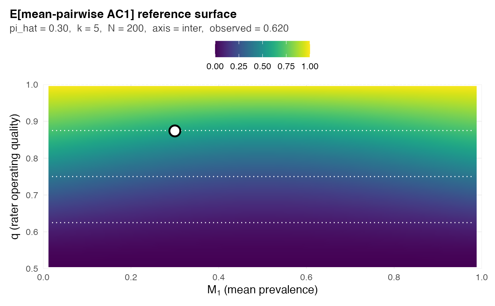

Standalone reference-surface plot for prospective study design
Source:R/plot-card.R
plot_surface.RdRenders the same context-conditioned reference surface that
plot.grass_card(type = "surface") shows, but driven by scalar inputs
rather than a fitted grass_report() result. The intended use case is
prospective study design: a practitioner planning a multi-rater study at
design (pi_hat, k, N) can ask "what does my reference surface look
like for this metric, before I collect data?" – and plot_surface()
answers without requiring a rating matrix.
Arguments
- metric
Character scalar. One of
"pabak","mean_pabak","fleiss_kappa","kappa","mean_ac1","ac1","krippendorff_a". ICC is not supported (see Details).- pi_hat
Optional numeric scalar in
(0, 1). The design's marginal positive rate. If supplied alone, draws a vertical reference line on the surface; if supplied together withobserved, anchors the pin point.- observed
Optional numeric scalar. An observed (or hypothetical) coefficient value. When supplied with
pi_hat, the function inverts tohat qand pins a marker at(pi_hat, hat q).- k
Optional integer. Rater count. Used for the subtitle only; non-ICC closed-form surfaces are k-invariant.
- N
Optional integer. Sample size. Used for the subtitle only; non-ICC closed-form surfaces are N-invariant in the large-N limit the surface represents.
- axis
One of
"inter"(default) or"intra". Used for the subtitle only.- bands
Numeric length-5 vector giving band boundaries on
q. Defaultc(0.5, 0.625, 0.75, 0.875, 1.0).- ...
Reserved for future extension.
Details
The plot is a heatmap of the closed-form expectation
E[metric](M_1, q) over the surface, where M_1 is the marginal
positive rate and q in [0.5, 1] is the diagonal rater operating
quality. Dotted contours overlay the four-band partition
(bands argument). When pi_hat is supplied alone, a dashed vertical
line marks the design's marginal. When both pi_hat and observed
are supplied, a filled marker pins the implied (M_1, hat q) point on
the surface; hat q is recovered by closed-form inversion of observed
against the reference curve at pi_hat.
This function uses the closed-form non-ICC surfaces only (PABAK,
Fleiss kappa, mean-pairwise AC1, Krippendorff alpha). ICC surfaces
depend on the full subject-prevalence distribution F and the
GLMM-gap-corrected fitted reference;
those are accessed via position_on_surface() with metric = "icc"
and (if available) a fitted card via plot.grass_card(type = "surface").
See also
plot.grass_card() for the card-driven surface view that
adds card-specific annotations (band, qualifier, primary-coefficient
pin); position_on_surface() for the underlying inversion machinery.
Examples
# \donttest{
if (requireNamespace("ggplot2", quietly = TRUE)) {
# Bare surface -- what does PABAK's reference look like?
plot_surface("pabak")
# Mark a design context (no observed value yet -- pre-data).
plot_surface("fleiss_kappa", pi_hat = 0.30, k = 5, N = 200)
# Pin a hypothetical observation on the surface.
plot_surface("mean_ac1", pi_hat = 0.30, observed = 0.62,
k = 5, N = 200)
}
#> Warning: The following aesthetics were dropped during statistical transformation: fill.
#> ℹ This can happen when ggplot fails to infer the correct grouping structure in
#> the data.
#> ℹ Did you forget to specify a `group` aesthetic or to convert a numerical
#> variable into a factor?
#> Warning: Removed 120 rows containing missing values or values outside the scale range
#> (`geom_raster()`).

# }